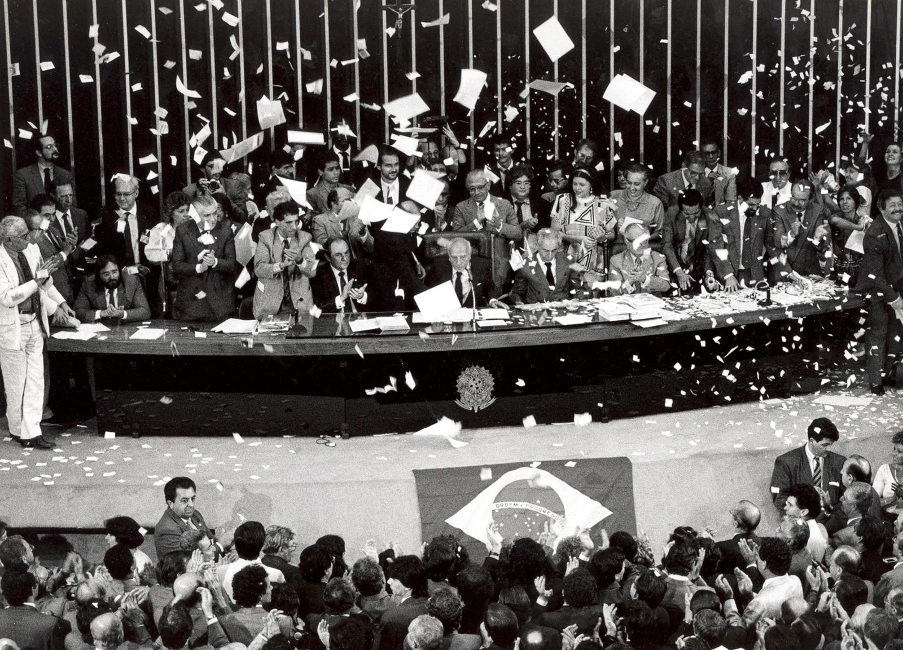

UMA JORNADA PELA HISTÓRIA BRASILEIRA
Memória em disputa.
Democracia em construção.
Entre nos arquivos. Escute as resistências. Entenda como se conquistam — e se defendem — os direitos.
↘1988
Seis salas para investigar o passado.
Uma pergunta para o presente:
o que impede o poder de se tornar abuso?

ENTRE, OBSERVE, INVESTIGUE
Um percurso, muitas perguntas.
Arraste para olhar. Toque em um painel.
Ou escolha uma sala na lista abaixo.
Preparando a galeria… As salas já estão disponíveis na lista.
Quando os arquivos retornam
O que os documentos apresentados em Bandidos de Farda permitem investigar? Separe o registro, a interpretação e a pergunta em aberto.
NÃO ACONTECEU EM UM DIA
O tempo da democracia.
Selecione um marco para abrir seu contexto.
Antecedentes, ditadura, transição e memória.
LER UMA FONTE É FAZER PERGUNTAS
A mesa de investigação.
Quem produziu? Em que data? Para quê?
O que mostra — e o que não permite concluir?
PROVENIÊNCIA E TRANSPARÊNCIA
De onde vem esta história?
Esta exposição educativa reúne fontes primárias, historiografia institucional e investigação jornalística. Cada tipo de fonte tem autoria, finalidade e limites. O acesso ao original permite conferir e aprofundar a leitura.
Documentos de 2026: as fichas do ICL são sínteses autorais de reportagens com reproduções documentais. Não são fac-símiles integrais nem transcrições do acervo completo. A incorporação ao Arquivo Nacional é confirmada em notícia oficial do MPF.
Como estudar: situar a época → observar a fonte → comparar evidências → explicar o que elas sustentam. Termos usados pelo regime, como “subversão”, devem ser lidos como linguagem da fonte.
Imagens reais e créditos
Promulgação da Constituição · Arquivo Agência Brasil · CC BY 3.0 BR. O evento ocorreu em 5/10/1988; a data de 2/10 no cadastro do arquivo diverge da data histórica da promulgação.
Manifestantes diante do Congresso, eleição de Tancredo · Célio Azevedo / Acervo Senado Federal · CC BY 2.0. Registro de 1985, apesar do título do arquivo mencionar Diretas Já.
Reunião estudantil após a Passeata dos Cem Mil · Fotógrafo não identificado / Fundo Correio da Manhã, Acervo Arquivo Nacional · 27/06/1968 · domínio público, conforme ficha de origem.
Fotos redimensionadas para a exposição. Ambiente 3D educativo fictício, sem reconstituição de locais de violência. Three.js 0.160.1 · licença MIT. Não coletamos dados pessoais; anotações ficam neste navegador. Síntese editorial: novembro de 2026.